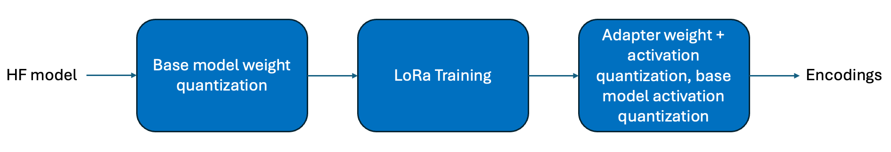

QW-LoRa¶
Context¶
The QW-LoRa workflow involves determining the appropriate weight encodings for the base model before performing some epochs of LoRa training. Finally, the activation encodings for the base model and weight and activation encodings for the updated LoRa layers are calibrated. This is expressed in the block diagram below.
{kind=link}
This workflow is especially useful if you have precomputed encodings for the weights of your model (using any technique) and applied those encodings to your model (so that the model parameters have already been updated).
Workflow¶
Setup¶
In this section, we instantiate the base model, LoRa adapters, and dataset using Huggingface APIs.
from itertools import chain
from torch.utils.data import DataLoader
from transformers import AutoModelForCausalLM, AutoTokenizer, AutoConfig, default_data_collator
from datasets import load_dataset
model_id = "facebook/opt-350m"
peft_model_id = "ybelkada/opt-350m-lora"
# This ensures that use_cache and return_dict are always set to false
# These settings are selected so that the model is JIT-traceable
config = AutoConfig.from_pretrained(model_id)
config.use_cache = False
config.return_dict = False
# Load model and LoRa adapter from Huggingface
tokenizer = AutoTokenizer.from_pretrained(model_id)
model = AutoModelForCausalLM.from_pretrained(model_id, config=config)
model.load_adapter(peft_model_id)
# Load train and test splits of dataset
def tokenize(examples):
seq_length = 512
examples = tokenizer(examples["text"])
concatenated_examples = {k: list(chain(*examples[k])) for k in examples.keys()}
total_length = len(concatenated_examples[list(examples.keys())[0]])
if total_length >= seq_length:
total_length = (total_length // seq_length) * seq_length
result = {
k: [t[i : i + seq_length] for i in range(0, total_length, seq_length)]
for k, t in concatenated_examples.items()
}
result["labels"] = result["input_ids"].copy()
return result
train_dataset = load_dataset(path='wikitext', name='wikitext-2-raw-v1', split='train').map(tokenize, batched=True, remove_columns=['text'])
test_dataset = load_dataset(path='wikitext', name='wikitext-2-raw-v1', split='test').map(tokenize, batched=True, remove_columns=['text'])
train_dataloader = DataLoader(train_dataset, batch_size=1, collate_fn=default_data_collator)
test_dataloader = DataLoader(test_dataset, batch_size=1, collate_fn=default_data_collator)
Quantize and Update Base Model Weights¶
Step #1 of QW-LoRa
In this section, we calculate quantization parameters for the base model weights, and use those parameters to update the weights. A helper function to do this is provided below if you do not already have a method of doing this.
Note
The provided helper function applies 4-bit symmetric integer quantization to all model parameters. This function can be updated to suit your quantization requirements. In fact, you can use any method of calculating weight encodings, as long as these encodings are applied directly to the weights.
import aimet_torch.quantization as Q
# Helper function that will fuse quantization parameters into the weight matrices of the provided module
# If you have a bespoke approach for calculating weight quantization parameters, then that would replace this step.
def calculate_and_fuse_encodings_into_weights(model):
for name, param in model.named_parameters():
# Skip applying QDQ on lora adapter layers
if "lora_A" in name or "lora_B" in name:
continue
# create a new 4-bit symmetric affine quantizer
qtzr = Q.affine.QuantizeDequantize(shape=(), bitwidth=4, symmetric=True)
# compute encodings for qtzr based on param
with qtzr.compute_encodings():
_ = qtzr(param)
# Apply QDQ to the param
param.data = qtzr(param.data)
calculate_and_fuse_encodings_into_weights(model)
LoRa Training¶
Step #2 of QW-LoRa
from tqdm import tqdm
import torch
from peft.tuners.lora.layer import LoraLayer
from aimet_torch.utils import place_model
# Configure model so that only LoRa layers are trainable
model.requires_grad_(False)
for module_name, module in model.named_modules():
if isinstance(module, LoraLayer):
module.lora_A.requires_grad_(True)
module.lora_B.requires_grad_(True)
# Function to perform one epoch of training
def train_one_epoch(model, dataloader, device=torch.device("cuda")):
optimizer = torch.optim.AdamW(model.parameters())
loss_fn = torch.nn.CrossEntropyLoss()
for batch_id, batch in enumerate(tqdm(dataloader)):
optimizer.zero_grad()
input_ids = batch['input_ids'].to(device)
attention_mask = batch['attention_mask'].to(device)
labels = batch['labels'].to(device)
logits, = model(input_ids=input_ids, attention_mask=attention_mask)
# Compute the loss and its gradients
shift_logits = logits[..., :-1, :].contiguous()
shift_labels = labels[..., 1:].contiguous()
# Flatten the tokens
loss = loss_fn(shift_logits.view(-1, model.config.vocab_size), shift_labels.view(-1))
loss.backward()
# # Adjust learning weights
optimizer.step()
# Perform LoRa QAT with base model weight, activation encodings frozen
with place_model(model, torch.device("cuda")):
train_one_epoch(model, train_dataloader, torch.device("cuda"))
PTQ¶
Step #3 of QW-LoRa
from transformers.models import opt
from aimet_torch.quantsim import QuantizationSimModel
from aimet_torch.v2.nn.true_quant import QuantizationMixin
from aimet_torch.peft import replace_lora_layers_with_quantizable_layers
# Generate dummy data used to instantiate QuantizationSimModel
tokenized_dummy_text = tokenizer("Here is some sample text used to create dummy input ids")
dummy_input_ids = torch.Tensor(tokenized_dummy_text['input_ids']).to(dtype=torch.int32).unsqueeze(0)
dummy_attention_mask = torch.Tensor(tokenized_dummy_text['attention_mask']).to(dtype=torch.int32).unsqueeze(0)
# Modify LoRa layers so they are quantizable
replace_lora_layers_with_quantizable_layers(model)
# Register quantized version of OPTLearnedPositionalEmbedding
@QuantizationMixin.implements(opt.modeling_opt.OPTLearnedPositionalEmbedding)
class QuantizedOPTLearnedPositionalEmbedding(QuantizationMixin, opt.modeling_opt.OPTLearnedPositionalEmbedding):
""" Dummy placeholder - we don't want to quantize OPTLearnedPositionalEmbedding """
forward = opt.modeling_opt.OPTLearnedPositionalEmbedding.forward
# Create a QuantizationSimModel
quantsim = QuantizationSimModel(model=model,
dummy_input=(dummy_input_ids, dummy_attention_mask),
default_output_bw=16,
default_param_bw=4,
in_place=True)
# Callback function to pass calibration data through the model
def generate_calibration_callback(dataloader, max_iterations: int, device: torch.device):
def forward_pass(model: torch.nn.Module):
with torch.no_grad():
for batch_id, batch in enumerate(tqdm(dataloader, total=max_iterations)):
input_ids = batch['input_ids'].to(device)
attention_mask = batch['attention_mask'].to(device)
model(input_ids=input_ids, attention_mask=attention_mask)
if batch_id >= max_iterations:
break
return forward_pass
with place_model(model, torch.device("cuda")):
# Compute all other encodings
calibration_callback = generate_calibration_callback(dataloader=train_dataloader, max_iterations=20, device=torch.device("cuda"))
quantsim.compute_encodings(calibration_callback)